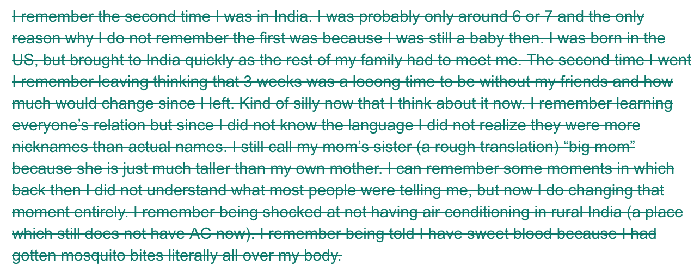
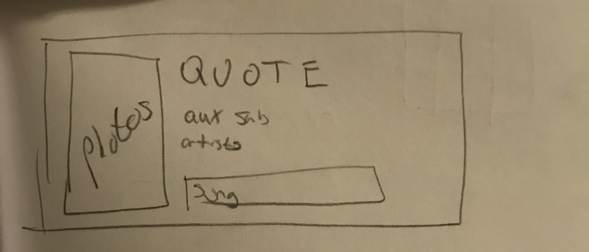

To dig deep into myself for this portfolio, to try to reveal my process, the best idea I came up with was
to be interviewed. It was an easy and hopefully effective way to traverse through my works. It could allow
me to be asked questions that could prod deeper into what my process was because I know personally I
sometimes forget the journey and only remember the ending. I do have a process and even if to me it seems
like I am just following my own thoughts, it is best to try to reveal it. However, to be
interviewed, you must have an interviewer so I decided to interview myself. To partially steal the name
from Frank Ocean’s a little bit cryptic tumblr post (drop the album frank please), I call this “An
interview to myself that I have not given yet”
Interviewer: I
Interviewee: Me
[Start of Interview]
I: HI!! Thanks for coming on the show. It's been a long time coming and we are glad to have you
Me: I’m glad to be here. I have only dreamed of being on this fake show
I: Well, we are going to be having a good time today I have some great questions lined up for you. Let’s just say this, our goal today is to get an insight into your process. Specifically, in your visual writing class.
Me: what
I: That class you took in college you know
Me: ...okay yeah we can talk about that. I don’t want to but we can
I: Great! That's good enough for me
Me: okay let's just get this over with then
I: How would you say you felt going into this class?
Me: Well, I usually do not like writing or English classes. It's the opposite of what I am “good” at it. I guess I just mean it's the opposite of what I like to do as well.
I: You said “usually”. Were there other classes you liked?
Me: I did enjoy first year writing and am glad I got to take it, unlike those who got to skip it for being better, because for once I actually had fun writing. I used to hate it in high school, but first year writing made it feel fun.
I: Why didn't you take another one after that if you liked it?
Me: Well, I was afraid really. Even if I liked it and had fun, it was different. It felt non standard and free form which felt a bit unusual. I am so used to be restrained and having to fit into the box of grades that it was a bit jarring. Because of that, I did not end up taking risks. I stuck to what I knew and did not deviate. I was afraid of doing everything wrong and getting a bad grade because that was the only goal I had. I thought I should try this class a bit different
I: How did that go?
Me: It did not start that well I would say. I actually remember the first day we had to do a notebook entry of like a story or something
someone told you that you remembered. I wrote down something
I did and remembered, which I guess technically does not answer the prompt. I got so worried about that small distinction that I deleted the original writing after I got back from class and rewrote something else. Luckily, Google docs saved it:

Looking back, that's kind of what I had to get over. I should not have deleted that and honestly left it as it was. Even if it did not technically answer the prompt, it was something I wanted to write about. I was stuck to the standard I was used to from my CS and math classes that apparently define me. I was too afraid to deviate and take risks, pursue the crazier ideas I have and not worry about the fact it might not turn out well. I wanted to push myself outside my comfort zone and take some risks.
I: What were some steps that you took to do that?
Me: It started off a bit natural as I did not trust my artistic abilities, but since this was a visual writing class there was a lot of that to start with. I was like already uncomfortable in the beginning of the class, and I will count it as a win that I didnt drop to be honest because I considered it so I didn't have to draw. That was already me moving away from my comfort zone.
I: you hate drawing that much?
Me: I don't hate it, I just was afraid of being bad at it. It's not something I really enjoy, but I guess because maybe I think I am bad at it. Like looking at my graphic narrative. I felt like there was more I could do, but I didn't include it because my drawing was not up to par. I remember I had more ideas, but every time I tried to pursue I could not capture what my mind wanted. I was satisfied with
handing in what I ended up drawing because it was somewhere in the middle of what I wanted and how far my abilities could take me. There were parts that I thought turned out okay and still achieved what I was looking for. But, the overall goal fell short of I think what I could achieve. Now that I am even thinking about it, I should have just like let go meaning
why even care if I was bad at something. It does not matter to anyone else, and it definitely should not really have mattered to me. The worst that could happen is that I improve right?
I: huh, I guess you are kind of right? Going off that, I feel in today’s society we can be focused on comparing and have this norm of a success. Part of that norm, I feel, puts a lot of pressure on
being wrong or
being bad. The more I think about it the more I realize that is ridiculous and honestly the faster any of us can change probably for the better right?
Me: I dont think I can agree more and that’s why I want to take more risks and move away from my comfort zone. Because my comfort zone right now IS being afraid of being wrong or showing people that my drawings look the same they did when I was 5. The only reason they look the same as they were back then was because I have been telling myself that I suck at drawing for the last 15 years and not trying to improve it!
I: so do you think you took risks in that graphic narrative assignment?
Me: Maybe not exactly. I would say I was just dipping my toes in the water. Just getting ready and warmed up to really let myself go and it made me realize that I should not be afraid to try something new, especially in that space. It was a place where even if it worked it would be appreciated than ridiculed so I think that made me feel better about it. It widened my comfort zone and allowed me to take the next step in this journey.
I: what were you exactly ready for? What next step??????
Me: I guess I was ready to try something that truly would take my comfort zone and just absolutely destroy that shit.
I: …
Me: it was the photo essay. Honestly, something I
say I would never do again because I just don't know if I would be able to handle it. But, I bet if I had an idea similar to it I would pounce on it.
I: Haha for sure and just to give some context or the viewers out there who have not seen this project, it was a
photo essay about music where he interviewed strangers about music. He made a website with the photos of these people in a like a slideshow?(Me: yeah) and put the song they were listening to underneath their caption. It does not seem like it would be too difficult especially because you were living in a city at the time right?
Me: yeah honestly it shouldn't be that bad. But my anxiety levels skyrocket whenever I even think about interviewing strangers again. It was really hard especially because I was only targeting people who were listening to music, a universal indicator that they did not want to be talked to. It took a long time just walking around Boston to try to find people willing to. Each time I was rejected put a dagger in my heart honestly. Someone just straight ignored me once and it felt like the lowest point in my entire life. I was like “can I interview you for a journalism project,” I say journalism because that got more people to interview even though technically it wasn't but they don't know that. She looked me in the eyes and just kept walking. That shit keeps me up at night.
I: okay but what about the actual photo essay?
Me: Well, I know I had a vision and that the project could turn out cool if done correctly. Once I saw that I could do something really nice in combination with the music, it motivated me enough to go after it. That’s why I put the effort in to like actually create a website, and by then I had so many ideas that I wanted to go after. Web design is something that interests me and I really wanted to try a lot of different ones. It’s weird because I had a sketch of one idea, which ultimately was what I ended up doing, but I really remember that I had like more elaborate ideas I wanted to try. I had crazy ones with some sick animations that I was going to do, but like school is a time killer you know. I ended up going with probably the more simpler idea I had. Even my Dad was like the website is just eh and he is really bad at web design.

I remember, in class I was pretty nervous as well because I put in all this effort, and I kept thinking what if no one liked it. I was back on my bullshit. It was something a bit different and I was scared. It took me a bit to get over that and it did help that my peers liked it and gave mostly positive feedback.
I: What were your biggest takeaways from that?
Me: Well, this was a big project for me as it felt like I tackled a lot of issues I was feeling at once. One matter being, I really did not let my fear hold me back. I tackled it head one, overcame it, and still had a bit of fun doing it. It was not easy but I did do it and that just gave me more confidence moving forward. Lastly, all the effort I put in paid off not because of the grade I will get or what others think but because I liked what I ended up doing. I was and still am a bit proud of that work, and sure there can be improvements and things I would like to change, but I am happy with what I produced.
I: I feel like that's a big step in the right direction. It can be easy to get validation from others, but dealing with
your own inner critic and getting past that fake filter in your head is arguably tougher for some. I think it's good that you were able to create something for yourself really and not just something that was for a class. Was there any part that you would like to change in that project?
Me: One glaring issue I have now is that I never put the music I listen to in that. I should have put a current song or something at the end. I feel like that would have been perfect and do not even understand how I missed that.
I: What song would you have put?
Me: you literally know that answer to that and it's going to be Frank Ocean song. I would probably say Nights because that's like my go to but for that project I think I would put U-N-I-T-Y because it would fit the theme. Seigfried also would be good for the IM NOT BRAVE part. I might have tried out a Playboi Carti or Travis song but eh I think Frank would have fit better.
I: I don't want us to get sidetracked on Frank, by the way if you are watching this Frank I would like to say you got a two fans out here and we love your art man. Keep up the good work and no rush on that album. Anyways, I think we are close to done here just like one last one, okay?
Me: ugh... shoot then
I: Did you have fun?
Me: haha thought you would ask a hard one. Yes I had a lot of fun. My most interested class that semester and I was a bit sad when it was ending. It was one journey that was definitely worth taking. Everyone in that class was a joy to work with and we had some good moments
I: aaaand thats a wrap! Thanks for coming out today it was a pleasure to have you here.
Me: eh, doing this was better than writing an essay… hope we do this again sometimes
I: we hope to have you again as well!